אגוזים
TREE NUTS 11 יחידות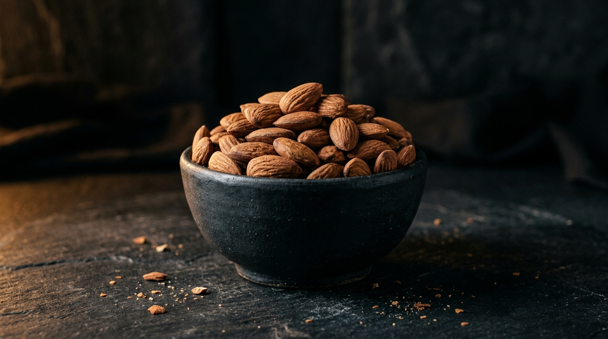
שמונים אחוז מהשקדים בעולם גדלים בעמק אחד בקליפורניה — בצורת אחת סוגרת שוק.
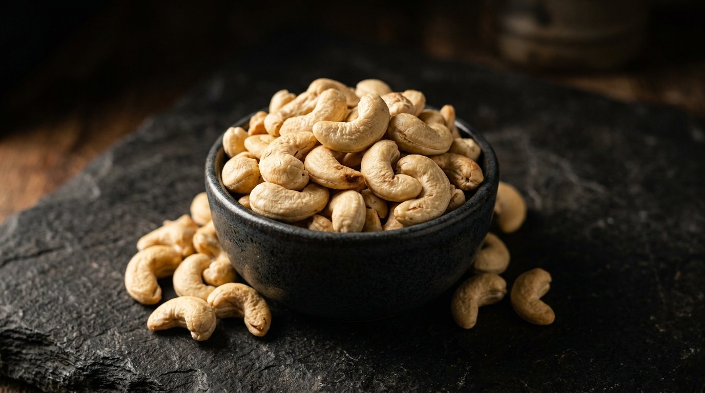
הקשיו לא גדל על עץ — הוא תלוי מתחת לפרי, בתוך קליפה רעילה שרק ידיים מיומנות פותחות.
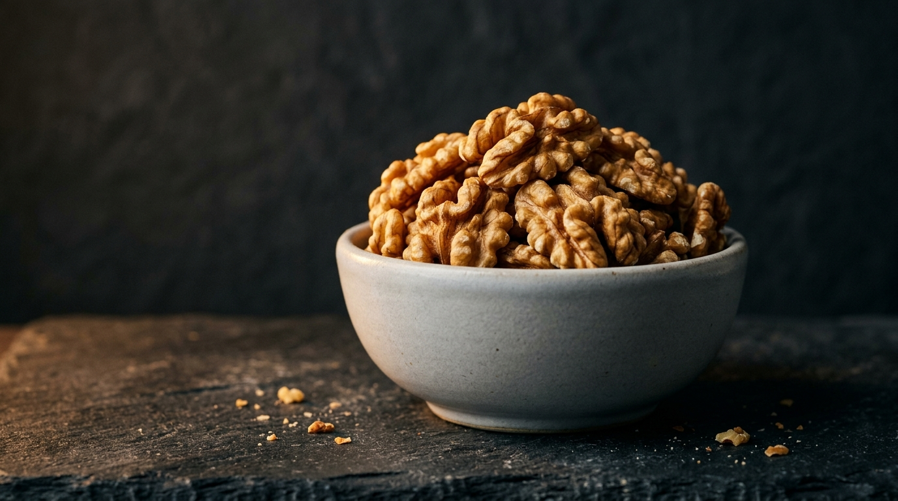
הרומאים קראו לו "אגוז יופיטר" — ועדיין אחרי אלפיים שנה הוא הכי נמכר בעולם.
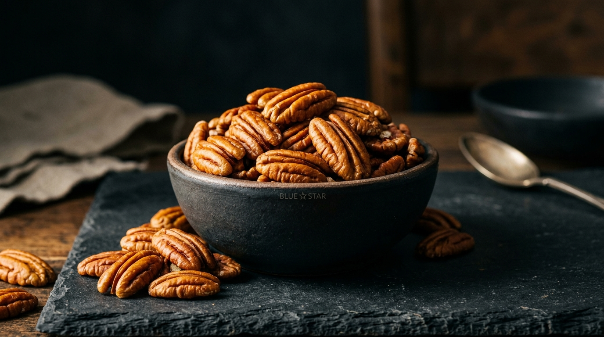
האגוז האמריקאי היחיד שמקורו בצפון אמריקה — ועדיין רוב האמריקאים לא יודעים מאיפה הוא בא.
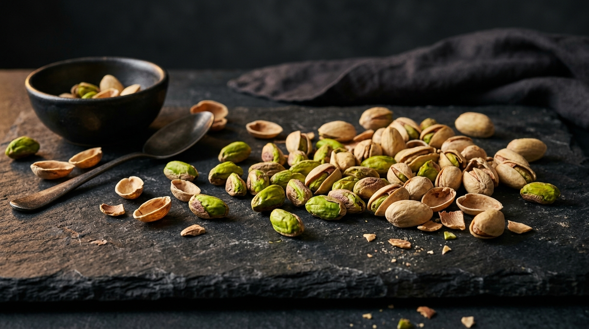
בגלל סנקציות על איראן, הפיסטוק הכי טוב בעולם כמעט לא מגיע לשוק המערבי.
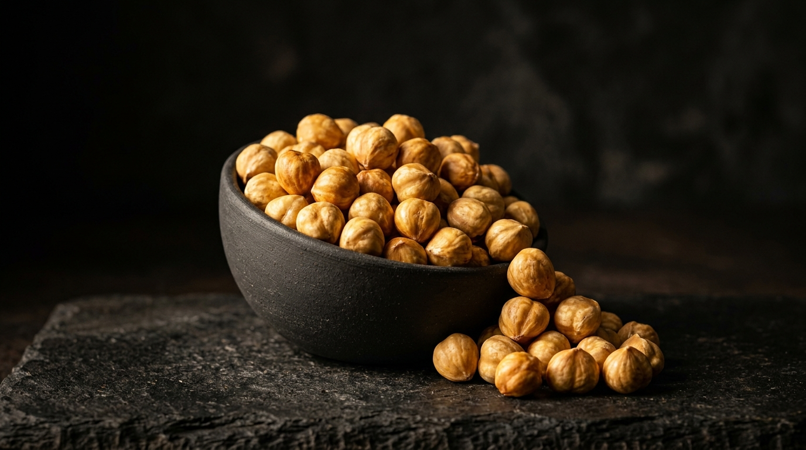
פרנרו רושה אוכלת רבע מהיצוא העולמי של אגוז הלוז — חברה אחת קובעת את המחיר לכולם.
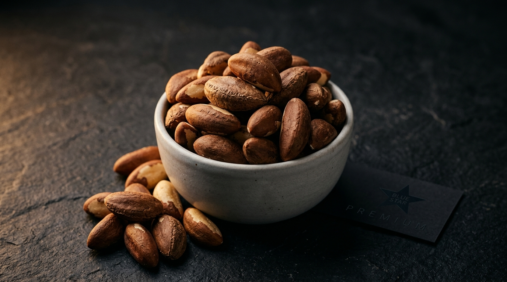
לא ניתן לגדל אותו בשדות מפוקחים — רק עצי ברזיל בר של האמזונס יכולים לייצר אותו.
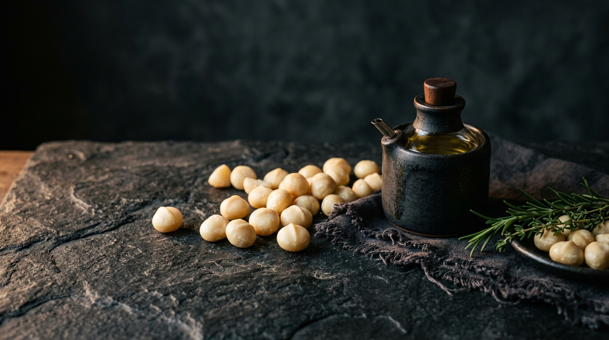
הקליפה שלה קשה פי שלוש מאורת פגז — לכן היא היקרה ביותר לעיבוד, והיקרה ביותר לקנות.
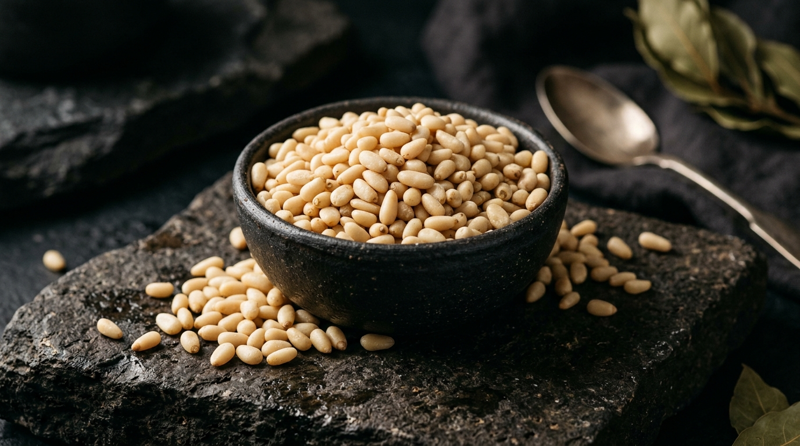
ארבע מינים שונות נמכרות תחת שם אחד — רק אחת מהן היא הצנובר האמיתי שאתה חושב שאתה קונה.
פירות יבשים
DRIED FRUITS 19 יחידותהתמר שרד במדבריות שבהן שום דבר אחר לא גדל — וזה בדיוק מה שהופך אותו לסחורה של ציוויליזציות.
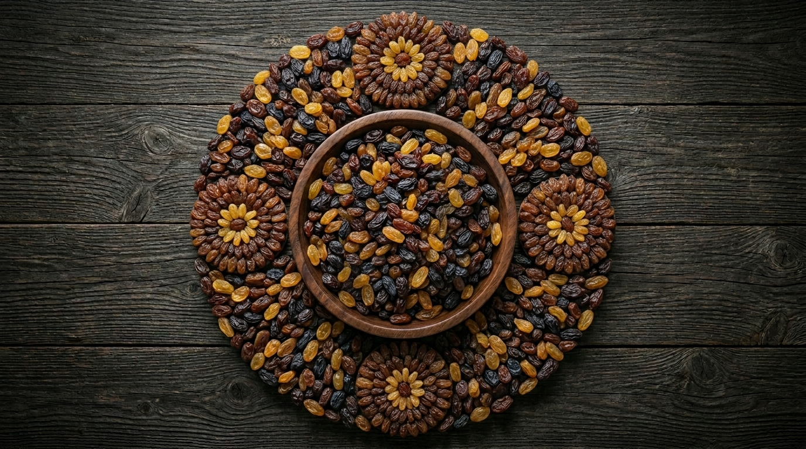
שוק הבריאות עזב אותו — אבל שוק האפייה נשאר נאמן, ושם נבנה עסק יציב יותר מכל טרנד.
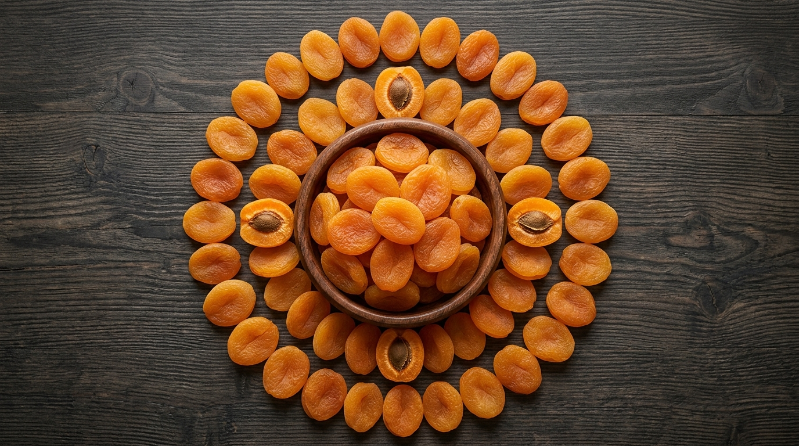
כשאתה קונה משמש כתום בהיר — אתה לא קונה טבעי, אתה קונה SO₂. הטבעי הוא חום ומכוער ויקר בהרבה.

ענב אחד שמת בשמש הפך לשוק של מיליארדים — ועדיין קליפורניה שולטת כאילו לא עבר מאה שנה.
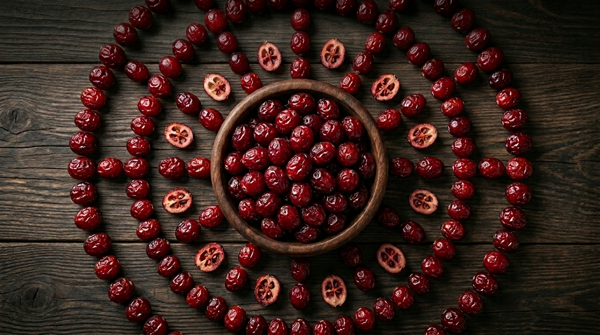
מחקר אחד על UTI פתח שוק בריאות עולמי — זה הכוח של claim אחד שיש מאחוריו נתון אמיתי.
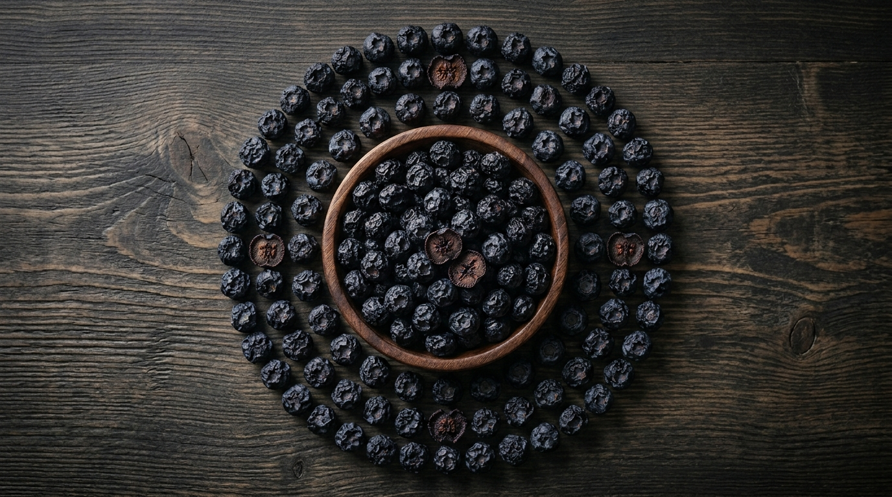
הבדל של עשרה דולר לקילו בין wild לבין cultivated — ורוב הקונים לא יודעים לשאול מה ההבדל.
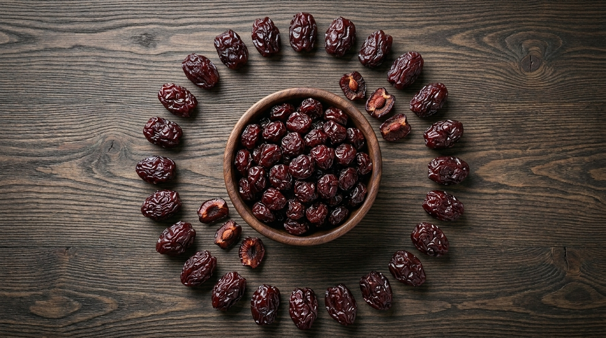
הדובדבן החמוץ ממישיגן מכר יותר ממה שהדובדבן המתוק אי פעם יוכל — כי לו יש מדע מאחוריו.
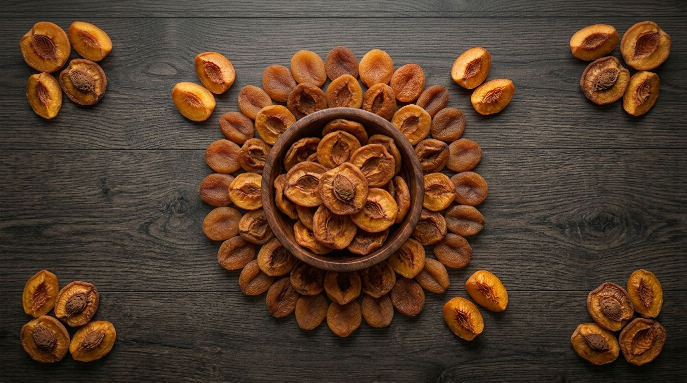
האפרסק המיובש נסע מסין לפרס, ומפרס לכל העולם — ועדיין רוב האנשים לא יודעים מאיפה הוא בא.

פטריה אחת בשם TR4 יכולה למחוק את כל עצי הבננה Cavendish — ורוב הסוחרים עדיין לא מדברים על זה.

פרי אחד שמניב שישה מוצרים שונים לחלוטין — מי שמבין את כל השישה שולט בשוק שלם.

התאנה מוזכרת בתנ"ך לפני החיטה — ועדיין היא אחת הסחורות הכי פחות מובנות בשוק היבש.

הפרי שגדל בתאילנד, מתייבש בשמש, ומגיע לילדים ישראלים כ"מנגו" — אבל איכותו נקבעת על הדרך.
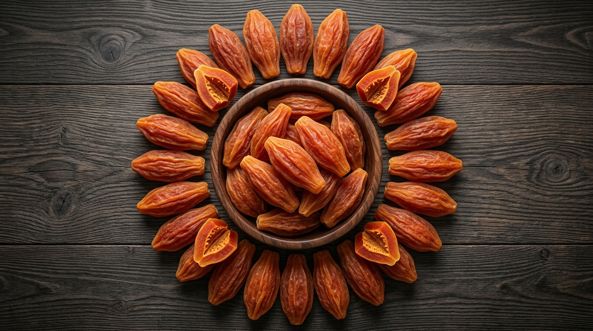
כמעט כל הפפאיה המיובשת בשוק היא sweetened — אם אתה מוצא unsweetened, אתה בשוק אחר לחלוטין.

אננס מיובש נראה פשוט — אבל SO₂, טמפרטורת ייבוש ופורמט החיתוך קובעים שלושה שווקי מחיר שונים.
זרעים
SEEDS 06 יחידות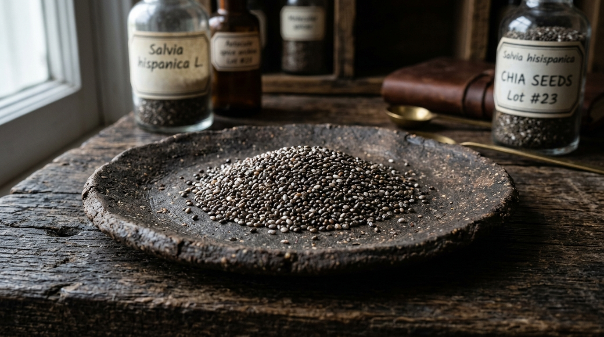
הצ'יה עשתה בעשר שנים מה שדגנים אחרים לא עשו במאה — כי היא מכרה תזונה, לא טעם.
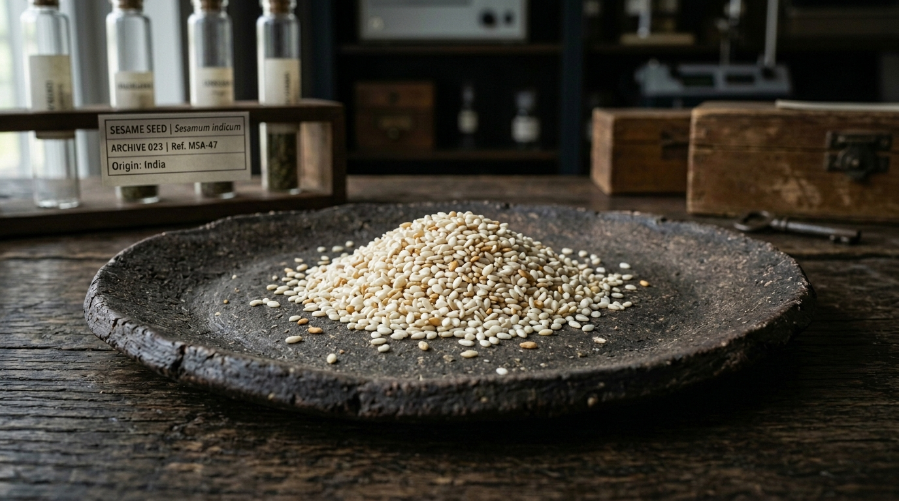
הגרעין הקדום ביותר שגדל יחד עם האנושות — ועדיין הבדל של שטיפה אחת מפריד בין פרמיום לסחורה.
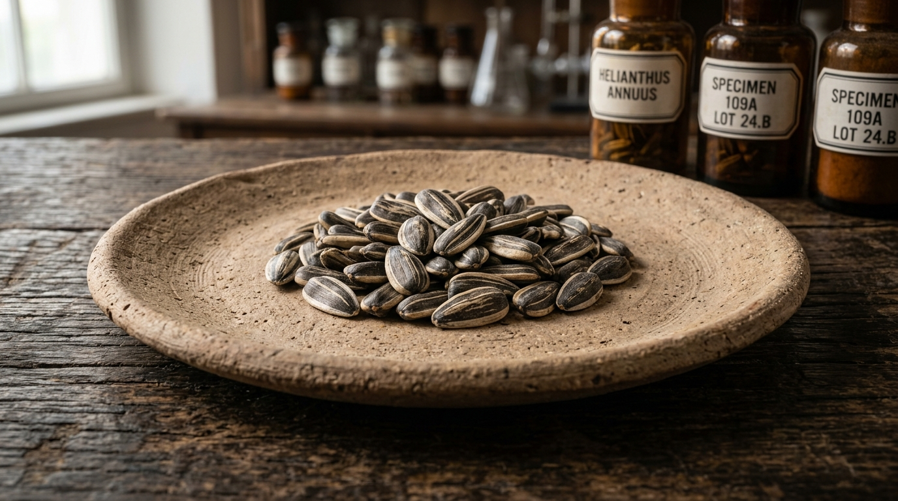
לפני 2022 אוקראינה ורוסיה שלטו בחמישים אחוז מהשוק — המלחמה שינתה את מפת הספקים לצמיתות.
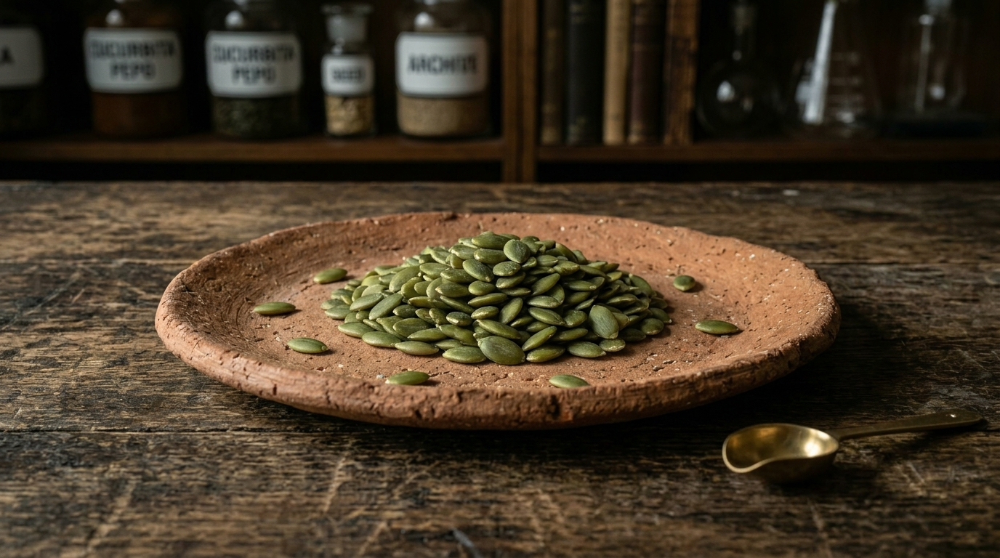
גרעין דלעת אוסטרי ירוק כהה ללא קליפה — זן שפותח רק לאכילה, ולא יכול להצמיח עוד דלעת.
תבלינים
SPICES 20 יחידות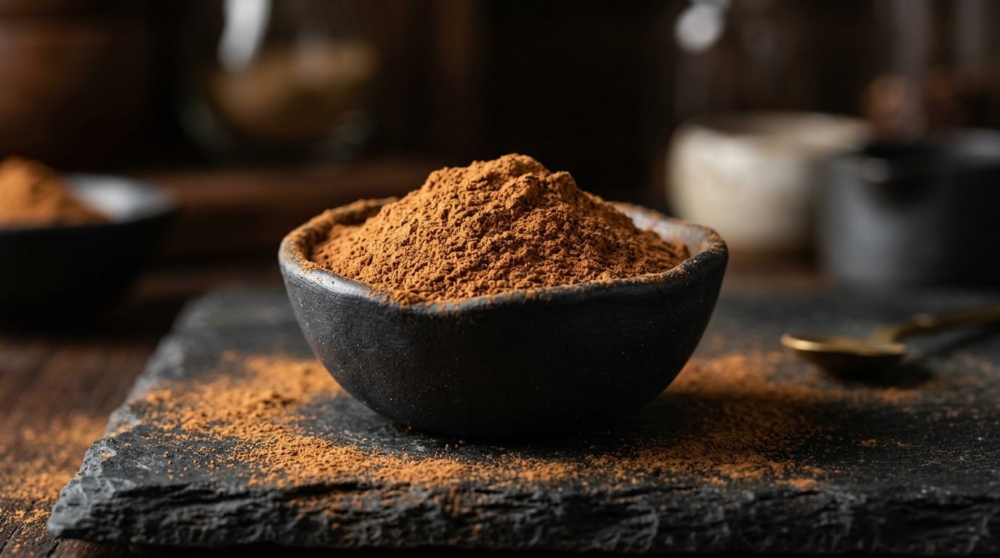
פעם הוא עלה יותר מזהב ביחס למשקל — היום הוא בכל מטבח, ועדיין וייטנאם קובעת את המחיר.
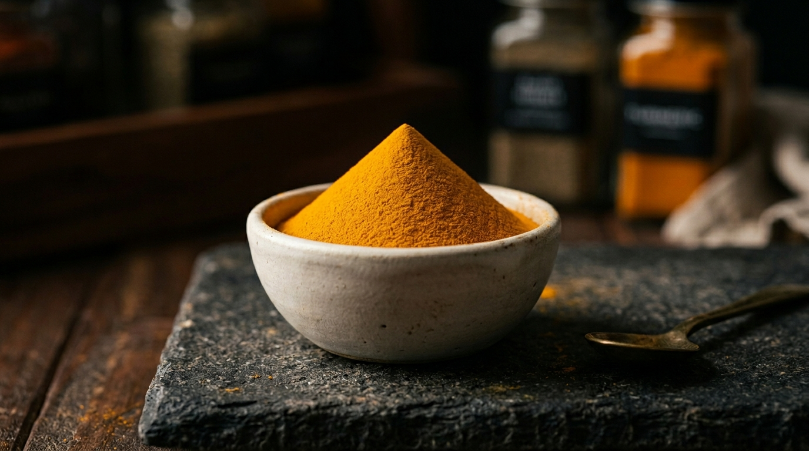
כורכום בלי פלפל שחור הוא כמעט חסר תועלת — הגוף סופג אחוז אחד, עם פיפרין הוא סופג עשרים.
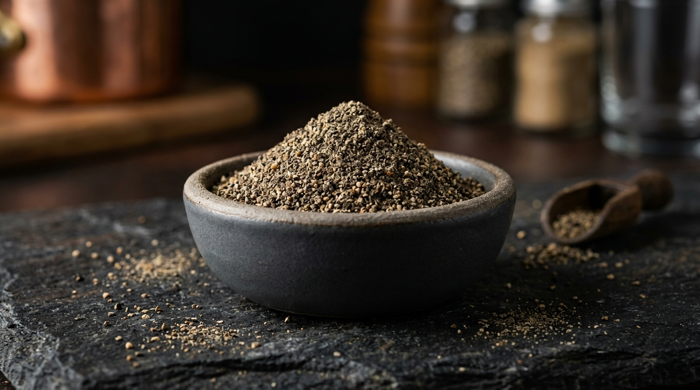
כל הקינמון שמכירים זה Cassia — הציילון האמיתי הוא פרמיום שונה לחלוטין, ורוב השוק לא יודע להבדיל.
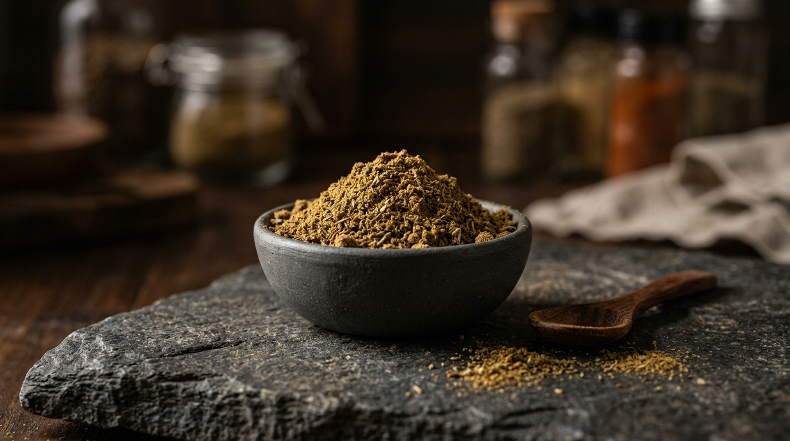
מצאו אותו בקברי פרעה לפני ארבעת אלפים שנה — ועדיין בורסת אונג'ה בגוג'ראט קובעת את מחירו היום.
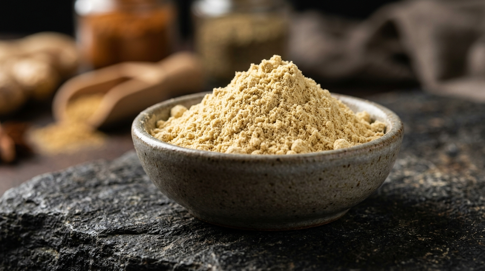
ג'ינג'ר טרי וג'ינג'ר מיובש הם שתי סחורות שונות לחלוטין — עם שני שווקים, שני מחירים, ושתי שרשראות אספקה.
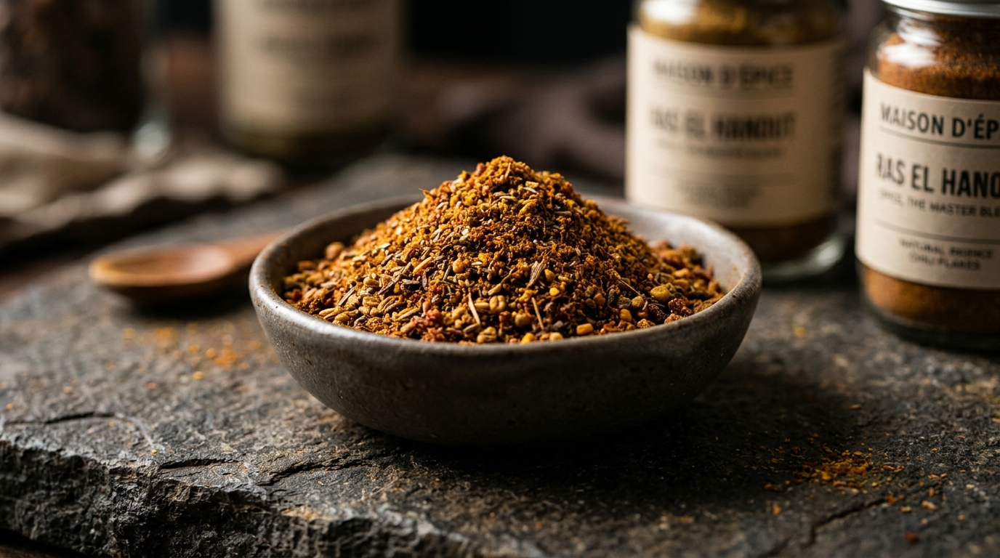
מקסיקו, הודו, סין. Scoville קובע פרמיום. Capsaicin מוכר לשוק הבריאות והקוסמטיקה.
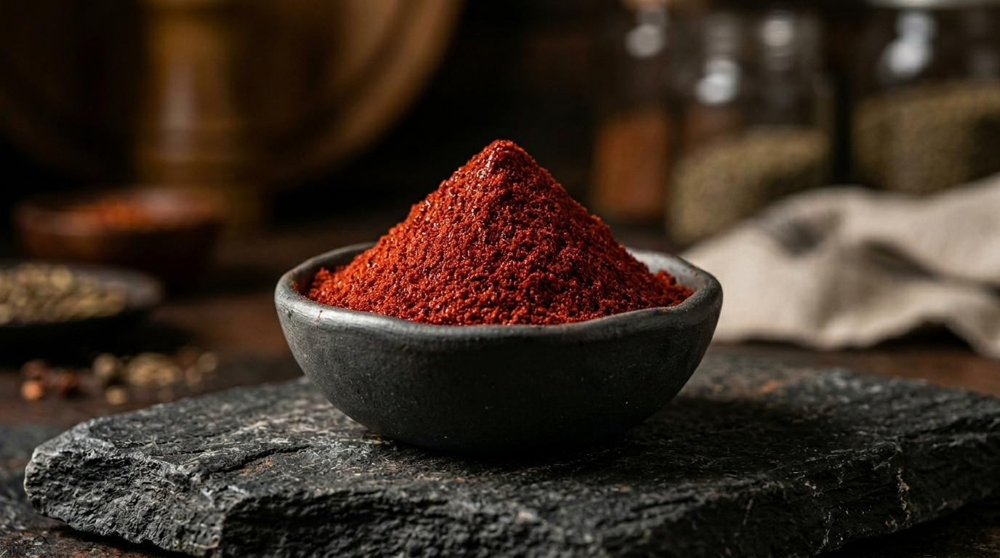
ספרד והונגריה הם הפרמיום. סין היא הנפח. Sweet לעומת smoked: שני עולמות.
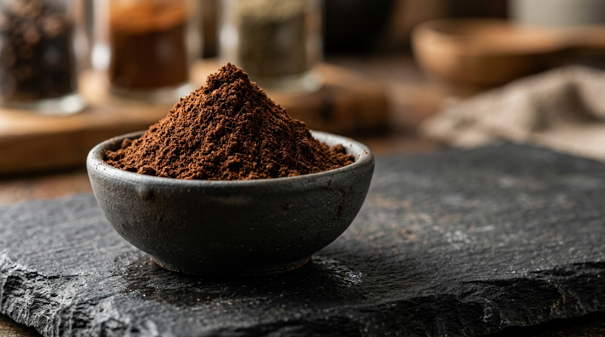
אינדונסיה 80% מהשוק. Eugenol לפרמצבטיקה ולדנטיסטים. Zanzibar הוא הפרמיום.

היקר ביותר בעולם. 150,000 פרחים לקילו. איראן 90% מהשוק. Crocin % קובע הכל.
הוניל היחיד שמאובק ידנית פרח פרח — ולכן מחירו קפץ ארבע מאות אחוז בשנה אחת כשהיצוא קרס.
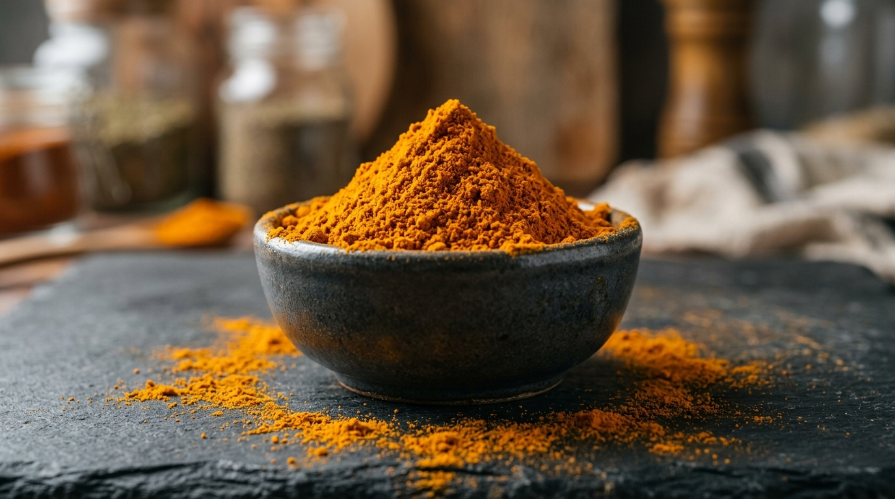
האורגנו המקסיקני והאורגנו הים-תיכוני הם שני צמחים שונים לחלוטין — רק השם המשותף מסבך את הקנייה.
תימול הוא חומר ההדברה הטבעי הכי יעיל שקיים — ושוק המשמרים הטבעיים מגלה אותו עכשיו.
גרעיני פרג כשרים ומותרים לאכילה — אבל מנה אחת יכולה להפיל בדיקת סמים, וזה סיכון שרוב הקונים מתעלמים ממנו.
77% מהיצוא העולמי בא ממדינה אחת. אליצין נוצר רק כשכותשים. הגוף עצמו נושא את הריח בנשיפה.
מלכת התבלינים. צמח הודי שגואטמלה תפסה ממנו 65% מהשוק ב-1914 בגלל איש גרמני אחד שראה הזדמנות.
על שדה שומר נלחמה קרב מרתון. קרל הגדול חייב לגדל אותו בכל חוות קיסרית. הודו שולטת ב-65% מהשוק.
5,000 שנות נוכחות ארכאולוגית. D-Carvone מונע נביטת תפוחי-אדמה ומשמש בחקלאות אורגנית אירופאית.
הלימון של לפני הלימון. ערך ORAC של 312,000 — מהגבוהים שנמדדו. Za'atar הביא אותו לשוקי גורמה עולמיים.
ניחוח מייפל, 22 מרשמים בפפירוס Ebers, וחומר גלם לגלולות מניעת הריון. שלושה שווקים לאותו זרע.
תבלין שהפך לחומר גלם לטמיפלו. ב-2005 Roche רכשה 90% ממלאי העולם ומחיר התבלין קפץ 400%.
אגוזים — המשך
MORE NUTS 02 יחידותפירות מיוחדים
SPECIALTY FRUITS 05 יחידות80% מהתפוחים המיובשים בשוק מגיעים מסין. הבדל בין SO₂ לאורגני: 30 דולר לקילו.
הפרי האדום מניגסיה שנמכר לעולם כ-superfood. 18 חומצות אמינו ו-Zeaxanthin לבריאות העיניים.
הפרי הפרואני שהאינקה אכלו ואירופה גילתה לפני 20 שנה. Withanolides — אותה משפחה כמו אשווגנדה.
ויטמין C גבוה פי 10 מתפוז. נאסא כללה שמנו בתפריט האסטרונאוטים. שוק קוסמטיקה גדל 18% לשנה.
ייבוש מרכז לייקופן פי 12 מעגבנייה טרייה. Sun-dried איטלקי לעומת Semi-dried טורקי: שני שווקים שונים.
זרעים — המשך
MORE SEEDS 02 יחידותקטניות
LEGUMES 06 יחידות10,000 שנות גידול, 26% חלבון, מחזור 80 יום. הקטנית היעילה ביותר לפלנטה לחוצת משאבים.
הודו 75% מהייצור. ישראל אחת מהצרכניות הגבוהות לנפש בעולם. פשטידת חומוס ב-NYC פתחה שוק גלובלי.
200 זנים, 6 יבשות, שוק 25 מיליארד דולר. White, Black, Kidney — כל זן שוק אחר ורגולציה אחרת.
חלבון האפונה הוא חומר הגלם הכי נמכר בתעשיית חלבוני הצמח. Beyond Meat בנויה עליו.
הקטנית של הים-תיכון. Foul Medames — ארוחת הבוקר הלאומית של מצרים. 8,000 שנות גידול מתועד.
הסחורה החקלאית השנייה בנפח בעולם. ברזיל עוקפת ארה"ב. Isoflavones — המחקר הרפואי לא מפסיק.
דגנים
ANCIENT GRAINS 04 יחידותלא דגן — פסאודו-דגן ממשפחת האלמות. ללא גלוטן, עם Rutin שמחזק כלי דם, מחזור גידול 70 יום.
FAO הכריז 2013 שנת הקינואה. פרו גדלה 400% ביצוא. חלבון מלא — אחד מהבודדים במלכות הצמחים.
חיטה ירוקה שנשרפת בשדה — ועיבוד מכוון הפך אסון חקלאי לתבלין. סיבים גבוהים, גליקמי נמוך.
הדגן הראשון שהאנושות גידלה — לפני חיטה ואורז. אפריקה וסין עדיין סומכות עליו כדגן בסיסי.